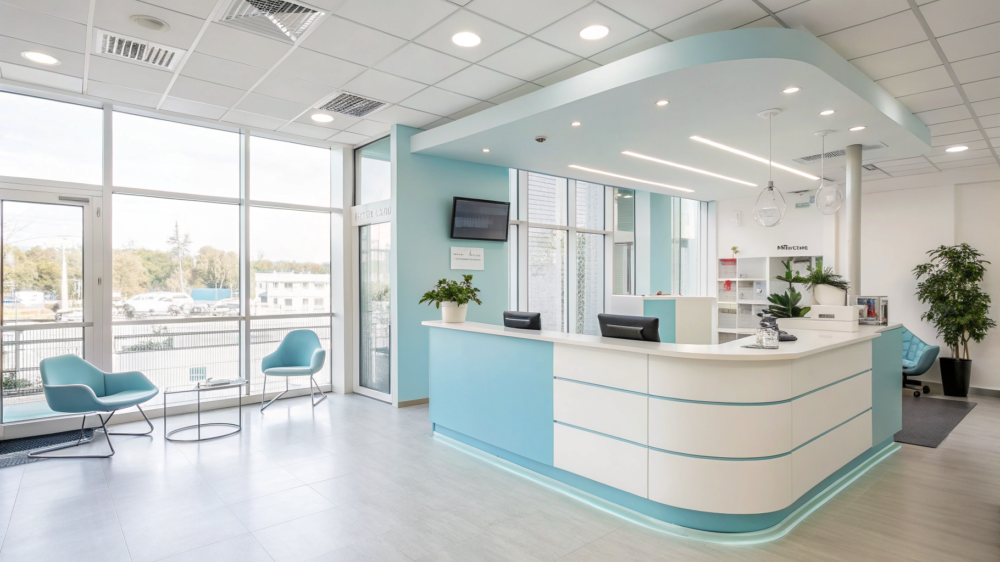

I 3 Errori Critici nella Gestione delle Chiamate negli Studi Dentistici e Come Risolverli con Dentis AI

Come Odontoiatri, Titolari di Studi Dentistici e Direttori Sanitari Possono Eliminare gli Errori più Gravi nella Gestione delle Chiamate con Dentis AI
- I 3 errori più comuni nella gestione delle chiamate negli studi dentistici mettono a rischio la fidelizzazione dei pazienti e l’efficienza operativa.
- Le chiamate perse, l’ansia dei pazienti fuori orario e la segreteria sovraccarica generano costi nascosti e perdite reali di opportunità.
- Dentis AI con Serena, la receptionist vocale AI 24/7, automatizza il triage delle urgenze, l’organizzazione del calendario e la comunicazione tramite WhatsApp, migliorando sensibilmente la gestione dei pazienti.
Analisi Approfondita della Notizia e delle Implicazioni Operative
Nel contesto attuale degli studi dentistici, la gestione efficiente delle chiamate in entrata rappresenta una leva strategica per garantire la continuità assistenziale e la soddisfazione dei pazienti. Le fonti recenti evidenziano come molti studi siano ancora ancorati a metodi tradizionali, con segretarie spesso sovraccariche o contatti telefonici non gestiti efficacemente fuori dal normale orario lavorativo. Questi elementi incidono negativamente sull’esperienza del paziente e, in termini operativi, provocano inefficienze che riguardano direttamente la reputazione dello studio e i flussi clinici.
Il primo errore critico emerso riguarda le numerose chiamate perse o non risposte tempestivamente, soprattutto durante i weekend o al di fuori degli orari di lavoro standard. Questo genera disappunto e insicurezza nei pazienti, aumentando il rischio di abbandono o di rivolgersi a competitor. Secondo quanto rilevato, una parte rilevante delle richieste urgenti rimane insoddisfatta, con impatto sulla qualità del servizio percepita.
Inoltre, la segretaria, spesso unico punto di contatto telefonico, si trova a gestire un carico crescente di chiamate, appuntamenti, promemoria e urgenze, senza disporre di strumenti automatizzati che ne alleggeriscano le attività ripetitive. L’assenza di un sistema che gestisca sinergicamente il calendario, la risposta telefonica e la comunicazione ai pazienti crea inefficienze prolungate nel tempo.
Le Conseguenze e i Costi di Non Agire
La mancata innovazione e automazione della gestione delle chiamate si traduce immediatamente in tre problematiche gravi e strettamente correlate. In primo luogo, la perdita di chiamate fuori orario comporta una diminuzione diretta dei contatti utili per acquisire e mantenere i pazienti, incidendo negativamente sul fatturato. Le urgenze rimaste irrisolte favoriscono anche una percezione di scarsa affidabilità e professionalità dello studio, aggravando la situazione reputazionale.
Il secondo costo, più sottile ma altrettanto rilevante, è l’ansia e lo stress che i pazienti vivono nei momenti in cui non trovano un riscontro immediato alle loro necessità. Questo può tradursi in disaffezione o in richieste ripetute ed estemporanee che appesantiscono ulteriormente il lavoro della segreteria.
Infine, la segretaria sovraccarica rappresenta un collo di bottiglia critico sia per la qualità del lavoro sia per il benessere del personale. L’aumento degli errori organizzativi, i ritardi nelle comunicazioni e un ambiente lavorativo stressante aumentano il turnover del personale e riducono la produttività dello studio.
Come Dentis AI Risolve il Problema
Dentis AI si propone come la risposta tecnologica efficace e innovativa a queste sfide. Il cuore del sistema è Serena, una receptionist telefonica vocale dotata di intelligenza artificiale empatica che opera 24 ore su 24, 7 giorni su 7, garantendo una presenza costante e affidabile. Serena risponde automaticamente al telefono, offrendo ai pazienti un dialogo naturale e rassicurante senza “tempi morti” o chiamate perse.
Un elemento distintivo di Dentis AI è la capacità di effettuare un triage intelligente delle urgenze, distinguendo in tempo reale la gravità delle richieste e indirizzandole correttamente ai professionisti o prenotando appuntamenti urgenti. Attraverso la sincronizzazione con Google Calendar, gli appuntamenti vengono organizzati in modo dinamico ed efficiente senza rischi di overbooking o dimenticanze. Inoltre, l’invio automatico di promemoria via WhatsApp riduce notevolmente i no-show e mantiene il paziente sempre informato con comunicazioni tempestive e personalizzate.
Questa automazione non solo alleggerisce significativamente il carico di lavoro della segreteria, ma migliora la percezione del servizio e la fidelizzazione dei pazienti. L’offerta di prova gratuita per 7 giorni senza necessità di carta di credito consente di testare il prodotto senza rischi, e il piano PRO a €149/mese è progettato per garantire un ritorno sull’investimento rapido e misurabile.
| Gestione Tradizionale | Con Dentis AI |
|---|---|
| Chiamate perse frequenti fuori orario | Risposta telefonica 24/7 con receptionist vocale Serena |
| Segreteria sovraccarica e stressata | Automazione triage e gestione appuntamenti sincronizzata con Google Calendar |
| Pazienti ansiosi fuori orario senza riscontri | Promemoria WhatsApp personalizzati e dialogo empatico sempre attivo |
💡 Ti è stato utile questo approfondimento?
Condividilo con un collega o un amico del settore Odontoiatri, Titolari di Studi Dentistici e Direttori Sanitari a cui potrebbe interessare!
FAQ - Domande Frequenti per Professionisti Odontoiatri
1. Serena può gestire tutte le lingue o solo l’italiano?
Attualmente Dentis AI è ottimizzato per la gestione fluente in italiano, con piani di espansione verso altre lingue in fase di sviluppo.
2. Come funziona il triage delle urgenze con Serena?
Serena valuta tramite domande specifiche la gravità della richiesta e indirizza il paziente verso un appuntamento urgente o consiglia un pronto intervento nei casi più gravi.
3. È possibile integrare Dentis AI con altri gestionali dello studio?
Sì, Dentis AI offre API e piani personalizzati per integrarsi con software gestionali odontoiatrici, migliorando ulteriormente la sincronizzazione e l’efficienza.
Inizia Subito
Prova Gratuita di 7 giorni senza carta di credito. Piano PRO a €149/mese.
Fonti Ufficiali e Risorse Esterne
Scopri l'Intelligenza Artificiale per la tua attività
Ottimizza i processi e aumenta le vendite con le soluzioni B2B di RM Studio.
Scopri Dentis AI